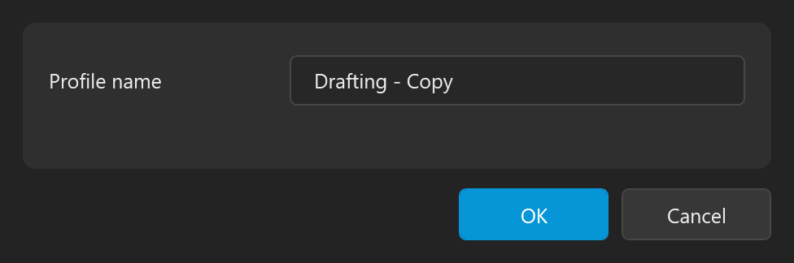
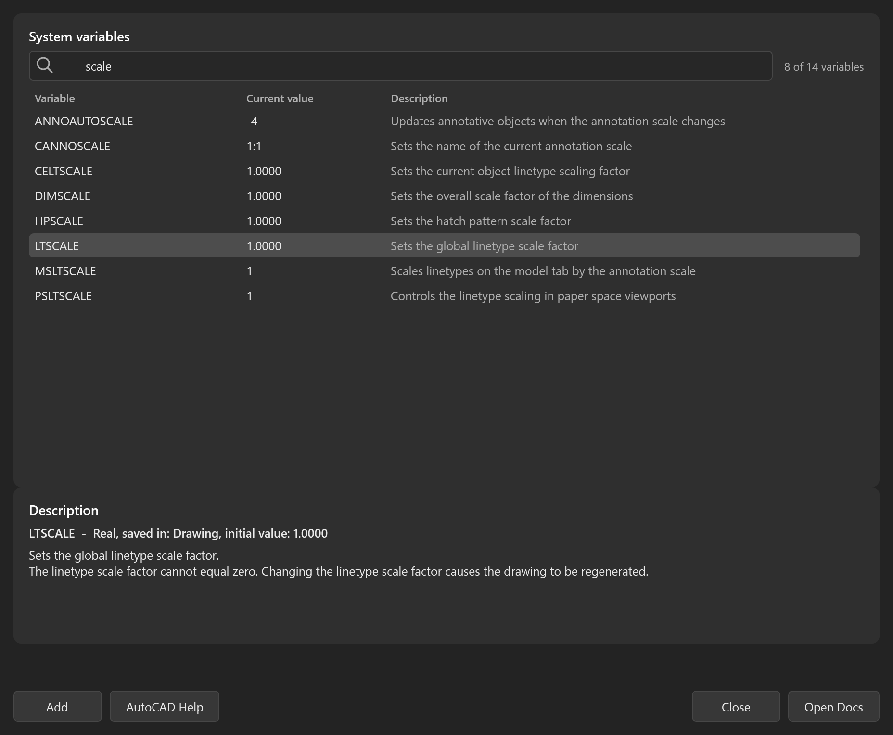

System Variables
| Function Syntax | DYL-SYSVARS |
| Works with | Settings – turns it on (System variables) |
Program Description
Keep AutoCAD variables at your preferred values in every drawing. Save them in profiles, and protect the few that must never change.

How To Use
- In Dyl-Settings, turn on System variables and click its square button, or type Dyl-SysVars.
- Pick a profile, or make one with New....
- Type a variable and its value, then Add. List... helps you find one.
- Click OK. Every drawing you open gets these values.
The Window
- Profile – New..., Copy..., Rename... or Delete a profile.
- Variables of the profile – each variable, your value and its value now. A * marks a difference.
- Use current – takes the value the variable has now.
- Reset all – sets your values in this drawing right away.
- Protected variables – kept in every drawing, whatever the profile.

System Variable List
List... shows every variable of AutoCAD with what it does. Type in Search to find one, then double-click it. AutoCAD Help opens its help page.

Known Limitations
- Your values are set when a drawing opens: a variable you change later stays changed until then.
- The list needs the Express Tools of AutoCAD.